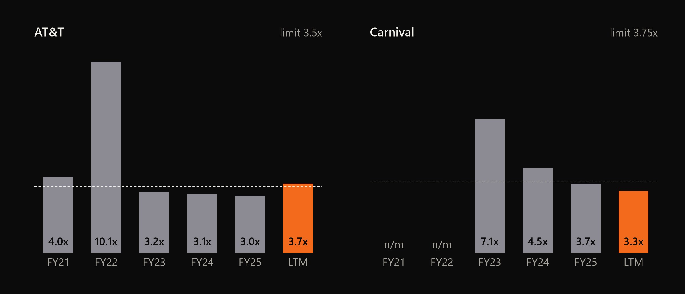

Credit Research Toolkit.

Two scripts for the parts of a credit analyst's job that are the same every time.
In short
- The question
- Can the routine half of credit work come straight from the filings?
- Data and method
- Tagged SEC data, five fiscal years and the last twelve months, for any company that files in US GAAP.
- What I found
- AT&T at $159.6 billion and Carnival at $23.9 billion, both matching what the companies report. The first version had Carnival wrong.
- What it means
- Good for a first pass and for noticing a change. Someone still has to read the filing.
Spread, then watch
- Spread. Revenue, EBITDA, free cash flow, leverage and coverage, with a sheet that names the tag and the filing behind every number.
- Watch. It checks each name against limits I set for leverage, coverage and covenant room, and reads new 10-Ks, 10-Qs and 8-Ks.
- Route. Every name comes out as broken, re-underwrite or intact, with the reason.
Four names, checked every weekday
| Issuer | Gross debt to EBITDA | EBITDA to interest | Route | Why |
|---|---|---|---|---|
| AT&T | 3.7x | 5.8x | Re-underwrite | Leverage over my 3.5x limit |
| Carnival | 3.3x | 6.2x | Intact | Nothing new since the 8-K of November 4 |
| Ford | not read | 6.1x | Intact | Debt uses company tags, so it is flagged as a gap |
| Apple | 0.5x | not tagged | Intact | No triggers |
Run on November 25, 2026.
The limits are samples I set to test the rules. Nothing here is a recommendation to buy or sell anything.
Checked against the releases
I checked the debt against what each company reports. AT&T came out at $159.6 billion in both. Carnival came out at $24.6 billion against $23.9 billion. The script took the principal tag for Carnival and the carrying value for AT&T. Two bases in one comparison is a mistake. It now uses carrying value for every issuer, and Carnival comes out at $23.9 billion. Four offline tests cover the rule.
How it is built
Python, with no paid data. I first drew a buy side credit process from idea to exit, then built the two steps that repeat most, spreading and surveillance. It caches what it pulls and remembers what it has already seen, so the second run only reports what is new.
What it does not show
- Reported EBITDA. Nothing is added back. AT&T's 2022 shows 10.1 times because of impairments.
- US GAAP only. Some companies use their own debt tags. Ford does, so its leverage is blank.
- Finance arms. They are consolidated. An analyst would split them out.
- Spreads and ratings. There is no free feed, so spreads are typed in and rating actions are not read.
- The schedule. It runs on weekdays. It failed for a week after I moved the folder, and nothing told me. A job that fails quietly is worse than no job, so it now keeps a log with an exit code.